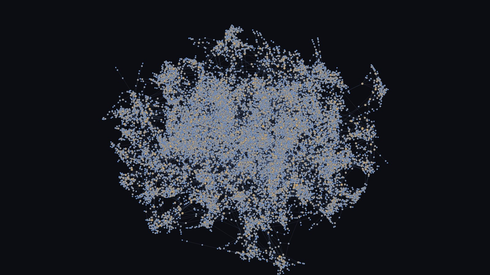

d3-force-3d-webgpu
d3-force-3d, running on your GPU. Same forces. Same API.
This browser doesn't have WebGPU, so the demos won't run here. Try a recent Chrome or Edge.

20,000 nodes in 3D: 0.24 ms per tick instead of 136. A million nodes: 3.2 ms. Every built-in force runs on the GPU, with an automatic CPU fallback.
import {forceSimulationGPU, forceManyBody, forceLink} from "https://cdn.jsdelivr.net/npm/d3-force-3d-webgpu/+esm";
const simulation = forceSimulationGPU(nodes, 3)
.force("link", forceLink(links))
.force("charge", forceManyBody())
.on("tick", () => render(nodes));